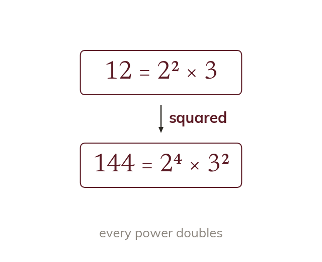

Why squares and cubes have special prime factorisations
Squaring a number doubles every power in its prime factorisation. So a square number has every power even. A cube number has every power a multiple of three.
Squaring a number doubles every power in its prime factorisation, because squaring means multiplying the number by itself, which doubles the count of every prime factor. So a square number's prime factorisation has every power even. Cubing multiplies every power by three, so a cube number's prime factorisation has every power a multiple of three ...).